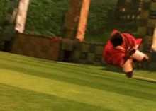
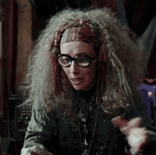

🏆 Gryffindor vs Slytherin – Match of the Year!
Today, the Hogwarts stadium is buzzing with excitement – Gryffindor
and Slytherin will face off in the battle for the school cup!
Gryffindor's captain Harry Potter promised to give his all, while Draco
Malfoy is confident that victory will belong to his team.

Harry Potter flying in the match
"A broom in hand – no limits!" – Oliver Wood
🔮 Madame Trelawney's Prophecy
Yesterday, during Divination class, Professor Trelawney
suddenly fell into a trance and spoke of a dark future.
"The darkness will rise again, and only the Chosen One can stop it..." she said in a mysterious voice.

Professor Trelawney and her mysterious prophecies
Headmaster Dumbledore assured that the school is safe, but can we trust his words?
👻 Hogwarts Ghosts: New Research
Recent research shows that the number of ghosts at Hogwarts has increased
over the past few months.
Professor Binns claims this might be linked to magical activity at the school, especially with the
introduction of new subjects and spells.
"Time here doesn't matter. We just watch what's happening..." – The Bloody Baron Ghost
💼 Dumbledore Goes on a Trip
Headmaster Albus Dumbledore is embarking on an important
mission to the Ministry of Magic.
Rumor has it, he plans to discuss the fate of all Muggles who might encounter magic in the future.
"Time is not just the continuation of events, it is the key to our future." – Albus Dumbledore
🦉 Owl Post: Hogwarts' New Mail System
The new owl post system has significantly improved the process of sending
letters.
Students can now send messages instantly, thanks to enhanced spells and new postal owls.
"It's better to send a letter by owl than sit and wait!" – Hermione Granger
💀 Warning! A Death Eater Spotted at Hogwarts
Rumors of the return of the Death Eaters have once again
become reality.
Some students and professors claim to have seen strange figures near the Forbidden Forest. An investigation
is underway.
"Be careful. They're among us." – Hermione Granger